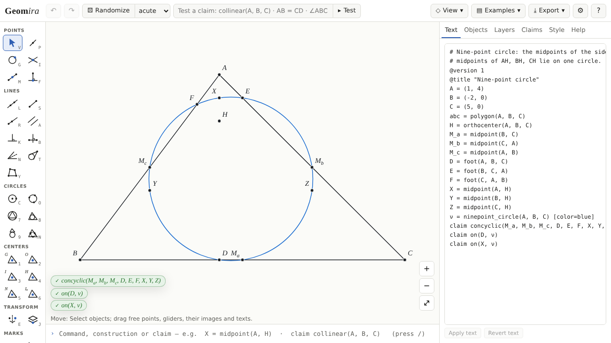

Geomira
Dynamic geometry for olympiad problems: build a figure with the mouse or in a short text language, drag it, test your claims on many random figures, and export it for a post or a handout.
Open Geomira Source and documentation

-
Text is the figure Every figure is a short text (
M_a = midpoint(B, C)) that you can edit, share as a link, and open again exactly. - Honest about degeneracy A point that cannot exist is shown as undefined with its reason, never drawn as garbage; a figure never jumps.
- Claims tested on random figures “Holds in this configuration (local test, n = 200, exact over Q)”: what was checked, with its seed and any counterexample.
- Exact arithmetic Constructions run over the rationals and modulo a large prime, so many claims are checked exactly rather than to a tolerance.
- Transformations and layers Reflections, rotations, homotheties and spiral similarities, with layers of images that follow their sources.
- TikZ and Asymptote SVG, PNG, TikZ and Asymptote exports of what you see, with constructive Asymptote where possible and an AoPS form.